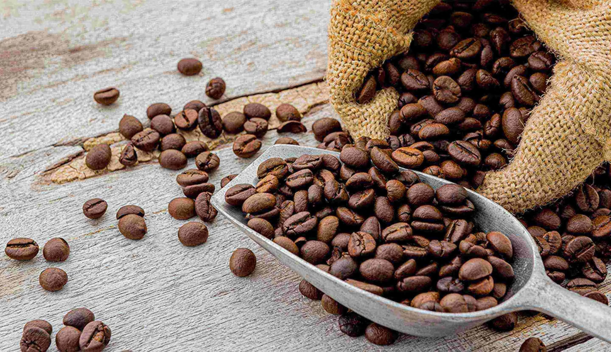
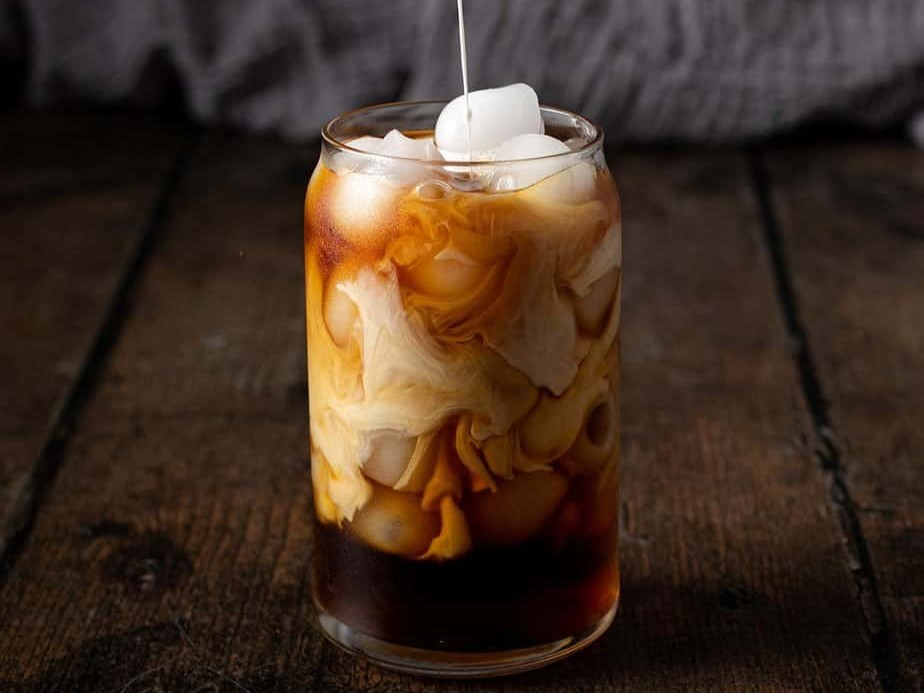
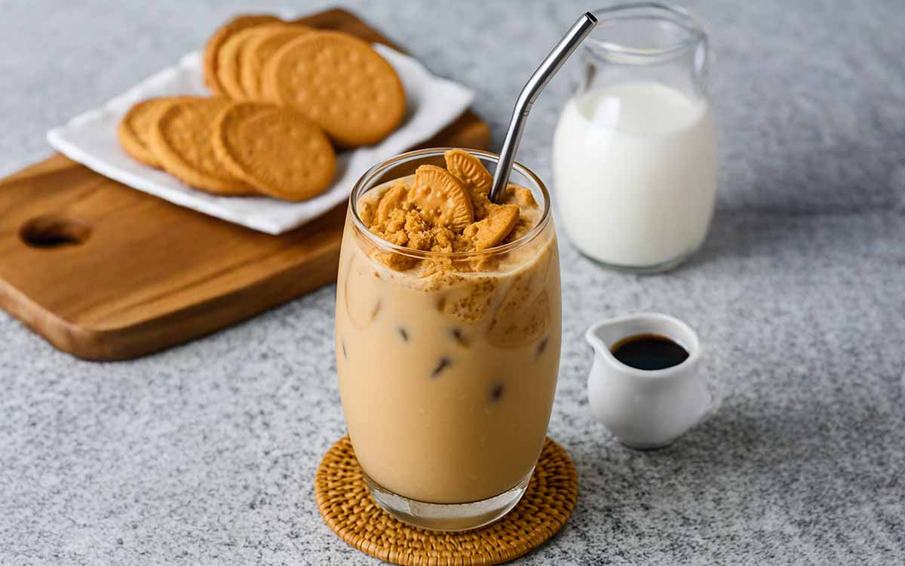

Kopi Tubruk Signature
Racikan biji kopi pilihan khas nusantara dengan seduhan tradisional yang pekat, pas untuk pecinta kopi sejati.
Rp18.000
UMKM Pekalongan
Kopi lokal pilihan untuk teman belajar, bekerja, dan berdiskusi.

Jalan Diponegoro No.45, Kedungwuni, Kabupaten Pekalongan, Jawa Tengah 51173
Jam layanan: SeninΓÇôJumat 07.00ΓÇô21.00 WIB, SabtuΓÇôMinggu 08.00ΓÇô22.00 WIB
Kirim email ke halo@kopinusa.id atau ikuti Instagram @kopinusa
Racikan biji kopi pilihan khas nusantara dengan seduhan tradisional yang pekat, pas untuk pecinta kopi sejati.
Rp18.000

Kopi seduh dingin yang disaring selama 12 jam, dipadu manisnya gula aren asli yang menyegarkan hari.
Rp22.000

Perpaduan coklat belgian rich dan susu segar dengan taburan biskuit Regal diatasnya. Cocok buat yang tidak minum kopi.
Rp20.000